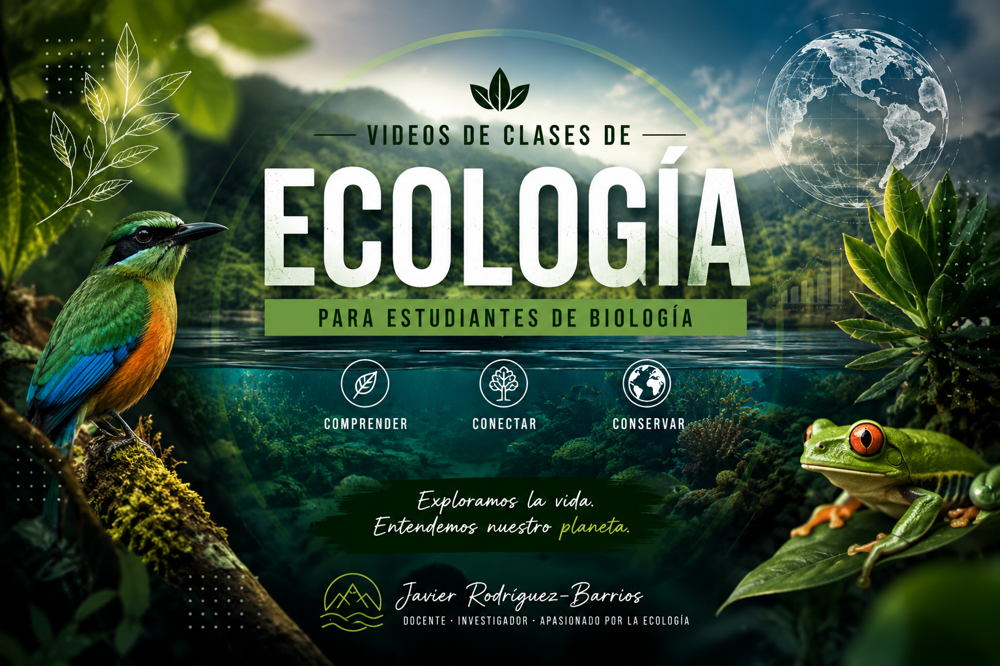
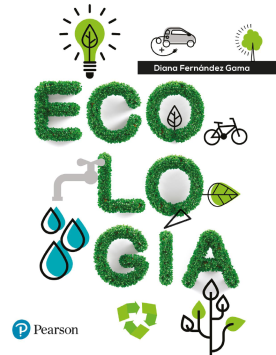

Videos clases

Los videos que se presentan a continuación corresponden a las sesiones realizadas durante 2025-I y 2026-II y se encuentran alojados en el repositorio de videos “Stream” de la universidad.
Nota: Para estos y el resto de videos de Stream, sugiero colocarlos en velocidad 1.5x, para que el avance sea más eficiente.
Semanas 1-2 - Clima
1. Analisis climatico de ecosistemas
( 2023-II )
- 🎥 Taller 1. Analisis climatico + zonas de vida — Grabacion de la clase (Teams)
( 2025-I )
- 🎥 Taller 1. Analisis climatico — Grabacion de la clase (Teams)
( 2026-II )
- ⚠️ Pendiente: agregar enlace del video de este tema ( 2026-II )
Semanas 5-6 - Exponenciales
1. Manejo de Ramas Ecolab y RStudio para modelos exponenciales
( 2025-I )
- 🎥 Modelos exponenciales de poblaciones — Grabacion de la clase (Teams)
( 2026-II )
- ⚠️ Pendiente: agregar enlace del video de este tema ( 2026-II )
Semanas 6-7 - Logisticos
1. Manejo de RStudio para modelos logisticos
( 2024-I )
- 🎥 Taller 3. Modelos logisticos realizado 2024-I — Grabacion de la clase (Teams)
( 2025-I )
- ⚠️ Pendiente: agregar enlace del video de este tema ( 2025-I )
( 2026-II )
- ⚠️ Pendiente: agregar enlace del video de este tema ( 2026-II )
Semanas 8-9 - Tablas de vida y matrices
Teoria tablas de vida
( 2023-II )
- 🎥 Teoria: Tablas de vida y Modelos de estado en poblaciones
- 🎥 Teoria: Modelos de estado en poblaciones
( 2025-I )
- ⚠️ Pendiente: agregar enlace del video de este tema ( 2025-I )
( 2026-II )
- ⚠️ Pendiente: agregar enlace del video de este tema ( 2026-II )
Talleres tablas de vida y modelos matriciales
( 2025-I )
- 🎥 Taller: Tablas de vida (1) — Grabacion de la clase (Teams)
- 🎥 Taller: Modelos de edad (x) — Grabacion de la clase (Teams)
( 2026-II )
- ⚠️ Pendiente: agregar enlace del video de este tema ( 2026-II )
Semanas 10-11 - Calotropis
1. Tablas de vida y modelos matriciales de Calotropis
( 2024-I )
- 🎥 Entrenamiento practica Calotropis — Grabacion de la clase (Teams)
- 🎥 Entrenamiento practica Calotropis (cont.) — Grabacion de la clase (Teams)
( 2025-I )
- ⚠️ Pendiente: agregar enlace del video de este tema ( 2025-I )
( 2026-II )
- ⚠️ Pendiente: agregar enlace del video de este tema ( 2026-II )
Semana 12 - Salida de campo

2. Procedimientos de campo
Nota: Estos videos son procedimientos metodológicos generales (no dependen del periodo académico), por lo que se mantienen de una salida de campo anterior. Si en 2025/2026 se regraban, simplemente reemplaza los enlaces de esta sección.
2.1 Hidrológicos - campo
🎥 2. Descripción del procedimiento a realizar
🎥 3. Medición de las distancias
🎥 4. Descripción del proceso de desplazamiento del objeto flotante
2.2 Batimetría - campo
🎥 6. Descripción del procedimiento para las mediciones en el perfil batimétrico.
🎥 7. Mediciones en el perfil batimétrico.
2.3 Fisicoquímicos - campo
🎥 10. Procedimiento para la medición de las variables con las sondas de campo.
2.4 Macroinvertebrados - campo
🎥 11. Colecta del sustrato de gravas (parte 1).
🎥 12. Colecta del sustrato de gravas (parte 2).
🎥 13. Colecta del sustrato de gravas (parte 3).
2.5 Peces (complementario)
🎥 16. Descripción de la actividad
🎥 17. Colecta de peces con red de mano.
2.6 Ambientales
🎥 20. Tabulación de datos en la cabaña
🎥 21. Tabulación - Datos de campo-Batimetría
🎥 22. Tabulación - Datos de campo - Hidrología (parte 1) Objeto flotador
🎥 23. Tabulación - Datos de campo - Hidrología (parte 2) Objeto flotador
🎥 24. Tabulación - Datos de campo - Hidrología (parte 3) Trazador con sal
2.7 Taxonomía de macroinvertebrados acuáticos
🎥 25. Procedimiento para la separación de los macroinvertebrados.
🎥 26. Procedimiento para la separación de los macroinvertebrados.
🎥 27. Procedimiento de identificación taxonómica y tabulación en el formato en línea.
🎥 28. Procedimiento de identificación taxonómica y tabulación en el formato en línea.
Semanas 12-13 - Densidad y distribucion
1. Teoria patrones de distribucion de poblaciones
( 2020-I )
- 🎥 Teoria - Distribucion de poblaciones (parte 1) — Grabacion de la clase (Youtube)
- 🎥 Teoria - Distribucion de poblaciones (parte 2) — Grabacion de la clase (Youtube)
( 2026-II )
- ⚠️ Pendiente: agregar enlace del video de este tema ( 2026-II )
2. Ejemplos patrones de distribucion aleatoria
( 2026-II )
- ⚠️ Pendiente: agregar enlace del video de este tema ( 2026-II )
3. Ejemplos patrones de distribucion agrupada
( 2026-II )
- ⚠️ Pendiente: agregar enlace del video de este tema ( 2026-II )
Semanas 14-15 - Comunidades
1. Teoria - Ecologia de Comunidades
( 2020-I )
- 🎥 2020 - Introduccion al modulo de Comunidades (parte 3) — Grabacion de la clase (Youtube)
( 2021-I )
- 🎥 2021 - Introduccion al modulo de Comunidades (1) — Grabacion de la clase (Teams)
- 🎥 2021 - Introduccion al modulo de Comunidades (2) — Grabacion de la clase (Teams)
( 2026-II )
- ⚠️ Pendiente: agregar enlace del video de este tema ( 2026-II )
2. Taller de computo - Ecologia de Comunidades
( 2025-I )
- 🎥 Taller 9. Diversidad alfa - sesion 1 — Grabacion de la clase (Teams)
( 2026-II )
- ⚠️ Pendiente: agregar enlace del video de este tema ( 2026-II )
Bibliografía recomendada de la Biblioteca Virtual:
Ecología (Diana Fernández, 2017) Módulo de diversidad, abundancia y estratificación

Elementos de Ecología (Thomas Smith, 2015) Módulo de Estructura de la Comunidad.

Ecología (Manuel Moles, 2019) Módulo de especies, abundancia y diversidad.